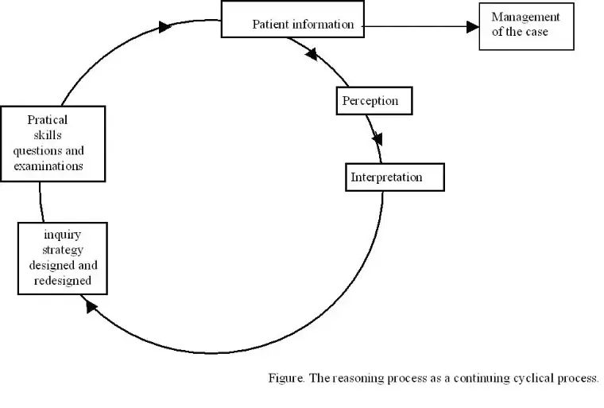

Problem Based Learning in Leprosy and Tuberculosis
Problem solving
Problem solving means that the health worker sees a patient in a clinic or dispensary, gathers information about the complaints of the patient, develops hypotheses about possible diagnoses, and then tries with the help of more elaborate information of the patient- physical examination, laboratory tests- to confirm ( or reject ) the most likely explanation. Let us illustrate this with the following example:
Cecila, a 21-year old lady reports at a TB/leprosy clinic with complaint of cough, blood in sputum. She also tells that she has the feeling of weight loss the last 2 months
The task of the health worker is to determine the cause(s) of Cecila's problem. To do this the health worker has to interview Cecila about her problems and conduct a physical examination. The findings can then be used to make some preliminary diagnoses (hypotheses or explanations) about the possible cause of the illness. Maybe the health worker has pneumonia, TB, chronic bronchitis and maybe aids in this mind. Now the health worker decides to do some laboratory tests, and finds the existence of tubercle bacilli in the sputum smear. He decides that the likely diagnosis is tuberculosis and the lady requires a anti tubercles treatment. He prescribes rifampicine. To make sure he did not prescribes too much to the young lady he weights Cecila. The result was < 50kg. Thus he prescribes 450 (not 600) mg once daily.
Problem Based learning and Problem Solving
Problem solving or reasoning processes must be distinguished from Problem- Based learning. The example of Cecila makes this clear. The health worker is really diagnosing the problem of Cecila and he will manage the real problem in order to cure. In PBL problems often related to patients are offered to the students, not to solve these problems as we explained extensively in the introduction to PBL, but to formulate learning questions. The students have to use different sources like the library to get answers to these questions so that they can understand the problem better. In the last step of the six steps in Problem Based learning- synthesis- the students must show their understanding of the problem. But understanding of the problem, its possible causes, the kind of mechanisms involved in it, are not the same as solving the problem. In order to solve problems one needs first of all an understanding or insight into the patient's problem, which can be learned in PBL just as in traditional education. This understanding must then be applied in real situations, with real patients (or sophisticated simulations), employing all kind of (clinical ) skills, like history taking, physical examinations and laboratory tests. This means that problem solving is minimal or absent in the early stages of a course and becomes more and more important at the end of a curriculum.
The distinction between PBL and Problem Solving is important :many students and teachers are confused about this two concepts. Quite simply, the overriding goal of PBL is to develop students' ability to raise questions, to think and take initiative for their own learning so that they can be equipped to approach the problems that they will later meet in health and disease in the same way. In problem solving the goal is to use these insights in order to diagnose and treat real patients. That's why we talk about Problem-based learning and Problem-solving.
To understand the difference between the two concepts thoroughly, we will discuss first of all the rather technical matter of problem solving more elaborately. At the end of this chapter we will compare and contrast Problem Solving and Problem Solving in Table 11.
Problem Solving: different steps
There are steps in problem solving, just as in PBL, ranging from the first data the health worker gets from the patient right up to diagnosis and management. But these steps are made in the mind of a health worker who sees patients in hospitals and dispensaries. The steps in PBL are made in the small groups.
When the patient is seen first, and the health worker (doctor) starts the history , a limited amount of information is available immediately; the appearance of the patient , how does he or she looks, his age and sex, the way he or she behaves and is dressed. We call this the perception of the doctor or health worker.
What happens in the mind of an experienced health worker? We all know that doctors and other health workers collect data by using all their senses like looking, smelling, hearing, listening and questioning. They also may have additional prior medical data in a record. All these new data have to be interpreted; is for example what the health worker sees normal or abnormal?, what is the importance of the finding?, can I describe what I see?, is this a symptom for a disease? After these initial perceptions experts, "automatically decides whether there is a problem and what kind of problem it might be. Then most experts are able to formulate, very quickly within minutes, several possible diagnoses about the phenomena the sees. This is the stage of early hypothesis formulation (preliminary diagnoses or explanations). These early hypotheses serve as a kind of pilots for the following steps in the investigation. To illustrate this we take another example.
Richard is a 22-year-old peasant farmer with one wife and 4 children. As the peak of the farming season approaches, he notices that his hands have become weaker and weaker. His grip on farm implements has become less and less effective. In addition he notices a skin patch around his right wrist which seems to be getting bigger these past few months. Being the family breadwinner he is seriously worried that he might not be able to produce enough cassava and other food to feed his family.
The most important information offered by the patient during the interview and the first impressions in the examination includes:
Weakening of both hands
Weakening grip
Patch around the wrist which has been increasing
The health worker interprets the above data as follows(preliminary hypotheses)
The weakening of the hands may be due to rigorous farming
or due to the consumption of too much cassava
the raised skin patch may be due to infection
Now the health worker starts further examination by asking more information from the patient. He learns that the patch is not itchy but that there is a loss of feeling occasionally. Besides he finds out that there was no contact with a household with similar skin lesions. The patient likes to eat a lot of cassava since he farms this mostly. During the physical examination he finds
two well defined skin patches with raised edges at the back of Richard
loss of feeling on the patch around the wrist
loss of muscle strength in all fingers of the right hand
mobile clawing of the 4th and 5th fingers of the right hand.
After these findings the preliminary hypotheses may be redefined more accurately:
Leprosy: insensitive skin patch, clawed fingers.
Fungal infection: raised patches
Peripheral neuropathy: too much consumption of cassava
Weakness of hand: fatigueness, too rigorous farming
The health worker decides to perform a Slit Skin Smear for AFB, and skin scraping for KOH and he examines the hands for sensory testing. The muscles are examined for strength as well.
The interpretation of the results, a positive AFB, a negative KOH and weak muscles, leads the health worker to leprosy as the most likely diagnosis. He decides to treat the patient using Multiple Drug Therapy.
For a summary of the different steps in problem solving see table 10. and Figure 1.
Figure 1. The reasoning process as a continuing cyclical process.
to enlarge click on figure

The facilitation of Problem solving.
The important goal of PBL is not only that students should learn how to gather the most important information related to a problem, understand the problem and thus develop as independent learners, but that they should also learn how to apply this information, in all their work-clinical, to solve patient problems, managerial to get their team to work efficiently, and in the community where all sorts of problems may arise.
If courses enable students to use their knowledge in real patient encounters, Tutors can facilitate this process in problem solving in the same way as they facilitate process of a small group learning. When they facilitate problem solving, they have to help the student to reason in a logical way by raising questions , encouraging the student to think critically, and to search for relevant information with the patient. Now the patient is available to answer questions and for more physical examination.
A facilitator can use specific questions to develop and stimulate the student's reasoning and to help the students proceed logically from the questions that they raised.
There is such a difference between questions that are good and that stimulate, and those that do not. Lets try to explain this by examples of good stimulating questions. If a student asks , for example, " Did the patient vomit?' or "Do you (patient) vomit?" the facilitator might ask: "What are you hoping to find out?" or " What are your reasons for asking this question?" or "How would knowing the answer-yes or no-make a difference in your approach to the patient's problem.?"
It is important also to encourage the students to make hypotheses or give explanations, the importance of this was explained above, and then to ask them to defend these. After a little time the tutor might ask" What do you think is going in this patient? "What reasons do you have for offering that specific hypothesis?" "What evidence would rule in or out this hypothesis?" Or ,"If you have this hypothesis in mind, what kind of data do you expect to find?"
When a student describes important signs and symptoms the facilitator might ask "What processes could have caused this?, and then move on from the abnormal process or mechanisms to its possible causes(diseases). There is nothing new in this, it is what good and thoughtful clinical teachers do routinely. PBL therefore is wholly in harmony with the historic methods of clinical excellence.
Encourage students to link one part of the case with another. The facilitator might ask "What is the association between leprosy and blindness, "How could his pulmonary tuberculosis affect his work?"
It is important to emphasise the mechanisms, which are responsible for a patient's problem, as has been mentioned above. The facilitator might ask, "What processes could have caused this problem?" or "what are the mechanisms involved, can you describe these?"
Then there is the purely factual information, which students should learn, and which can be regularly asked so that they become fluent in basic background knowledge. They can be asked to explain and define medical terms, which they use. "What is VMT?" "What does lagophthalmos mean?"
Students may find it difficult to refine their explanations and make them precise so the wise and helpful facilitator will encourage and support with a statement such as. " I understand what you mean, but will you elaborate it a little bit more?"
Or, if a student is trying to interpret a laboratory test , the facilitator may suggest, "What kind of result do you expect in this patient, and why do you think this result will be found?"
All these questions cluster around a group of major questions.
Most important questions to facilitate problem solving
- Is the diagnosis supported or compatible by or with the available data.
- If we accept this hypothesis what kind of findings do you expect, when continuing the investigation?
- What is the (preliminary) evidence of a hypothesis?
- Is there also evidence for an alternative diagnosis
- The interpretation of examinations and tests
- Findings that are critical to change provisional diagnosis
- If your patient is not a man but a woman, or not an older person but a younger one, does this modify your decisions?
- Were actions done in the right sequence
- Were actions omitted?
- What are your major concerns?
Also with the facilitation of problem solving it is important that the facilitators don't see the students as working computers. Students are not yet confident and they need time to think. So after asking a question, PAUSE, give the students time to think and to formulate a response. A common mistake is to ask a question and to answer it yourself. If no answers are forthcoming, rephrase the question, if there is a long silence, help the student to feel at ease and not worried by his silence. But do not do this repeatedly. Some silence is productive. If a student does not answer the question, in spite of being helped, the facilitator can ask another student to respond. If a student gives an answer, acknowledge its value and compliment the student. This will make the student feel valued and will encourage him and others to continue. Note! If a student feels his answer is ridiculed or ignored, he may withdraw from the discussion entirely or not speak voluntarily again. Students should not to be put down.
Comparison and contrasting Problem solving and Problem based Learning
If we compare the different steps in PBL and Problem solving more in detail now, we see first of all that both processes starts with a patient. In PBL mostly a written case, in a situation one has to solve a problem, with a real patient. In written cases some information is presented, the real patient presents complaints and the doctor or health worker has a first impression of the real patient. In PBL
the students are invited to make a problem list and formulate possible explanations or hypotheses. During Problem solving the health worker immediately (because he has a lot of knowledge about leprosy and TB) formulates preliminary hypotheses that guides him to perform more elaborate investigations of the patient. More physical examination and or technical examinations. The students however in PBL use the problem list and explanations for the formulation of learning issues. Their task is to get more knowledge about the problems. When the health worker is able to diagnose the problem of the real patient, he will manage the problem for example with treatment. If students are successful to find the good answers on their questions, they will try to synthesise this knowledge with the written case in order to understand the problem better.
After a lot of problems and other training they become experts step by step, expertise that will help them to become good problem solvers as well.
The gradually gain of knowledge in PBL makes that in the very beginning, problem solving is minimal or absent in the course, but becomes more important as students will get more knowledge.
Remark. Problem solving is also enabled in other learning situations without real patients. With the help of simulated patients and written or computer simulations the student is invited to solve these kind of problems. In many universities students are confronted with these models. Since these models are very expensive to develop we are not discussing these learning formats for problem solving in detail.
For illustrative puposes we compare PBL and problem solving in table 11.
Pattern Recognition
In medical literature there is a continuous debate about to what extent the hypotheses formulation is used in problem solving or medical reasoning, and to what extent immediate recognition of the characteristics of a problem is used.
Medical problems may vary from very simple ones, like Peter and Cecila to very complex ones, like Olumide.
In some problems the data or information are ambiguous and conflicting. Some patients have patches that are itchy, scaly but sensitive to touch, other patches however are rough but insensitive to touch and it takes then a lot of different possible strategies to solve the patient's case, like we saw in the case of Richard. In such problems the formulation of hypotheses is very important for developing the inquiry strategy; they form the pilots for the investigation to find appropriate data to support or reject assumptions . But this strategy; hypothesis formulation and medical reasoning may not be very adequate for every problem.
Sometimes problems can be recognised and diagnosed by means of visual patterns immediately. (pattern-recognition). For example handwritings. Everybody has a different way of writing but we can read the same letters and words. In TB and leprosy a lot of diagnosis can be made by recognition of distinctive visual signs. For example a cachetic man (severe weight loss) who coughs with mucopurulent sputum with streaks of blood in it maybe to be suspected to have TB. Similarly, a lady with loss of eyebrows, eyelashes and collapsed bridge of the nose maybe regarded as having lepromatous leprosy until proved otherwise. In general medicine, patterns in the ECG or EEG are commonly used for diagnosis and the abnormalities are diagnosed made by this recognition because there are many distinctive of visual signs.
This pattern recognition-maybe we can call this spot diagnosis-of a problem is true for more experienced workers in the field. But when the problem is not recognised rapidly or when the diagnostic and management issues are complex, this method of pattern recognition becomes insufficient and the different hypotheses have to be tested. When difficulties are experienced then the use of multiple competing hypotheses is a strong method to find the correct diagnosis. This method is very useful so that students can learn how to approach a medical problem.
As Barrows pointed out "Good reasoning skills will carry you a long way even if you are short on needed facts". Throughout professional life health workers and doctors encounter problems for which knowledge and experience are inadequate, so they must prepare for baffling cases by developing effective and secure clinical reasoning skills.
Expert doctors and health workers will recognise some problems immediately by pattern-recognition, students will learn a lot from a systematic approach in reasoning in order to recognise problems later on more immediately. It is the process of becoming an expert.